美食推荐
-

鱼饼
用它来开汤，味道鲜美，香脆可口，是家居备菜.一般逢年过节，赣州家家户户都很喜欢上的一种菜肴。鱼饼色泽金黄，既有鱼肉炸后的香味，又有大量的汤汁包在鱼饼之中，鲜嫩味美，久食不腻。
-
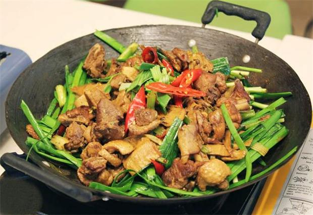
生焖鸭
生焖鸭的主要原料就是仔姜、仔鸭。其做法是将鸭和姜切成小块，配以红辣椒、蒜仁、米酒、砂糖、酱油等炒焖而成。其特点是色泽金黄，皮香肉烂，鲜辣可口。这是赣州居民十分喜爱的一道时令菜肴。
-
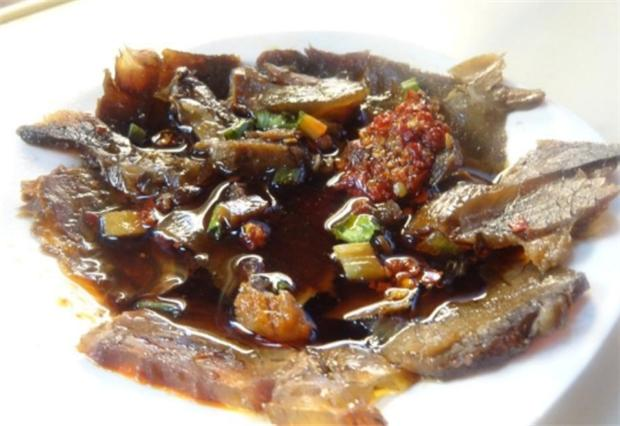
酒糟鱼
鱼肉在口中，细腻滑爽，余香久久，过若干时间开始升华，吃着那酒糟、红泡椒，食者便会有一些悬醉，感觉在沧桑的岁月里，因为你会感觉到这鱼，它离开了湖泊，它沉睡在酒里，弥漫着令人陶醉的味道。
-
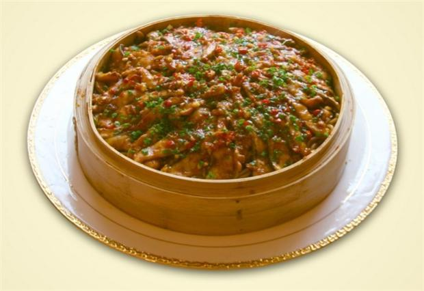
四星望月
四星望月通选鲜鱼肉切成薄片，粉干先入锅蒸熟，再铺上鱼片，盖好蒸透，浇上稀卤汁即可。 成菜后，色泽金黄，清香浓郁，鱼片嫩滑，粉干柔糯，咸鲜香辣，无腥味，冬食最宜，且能发汗祛寒。
-
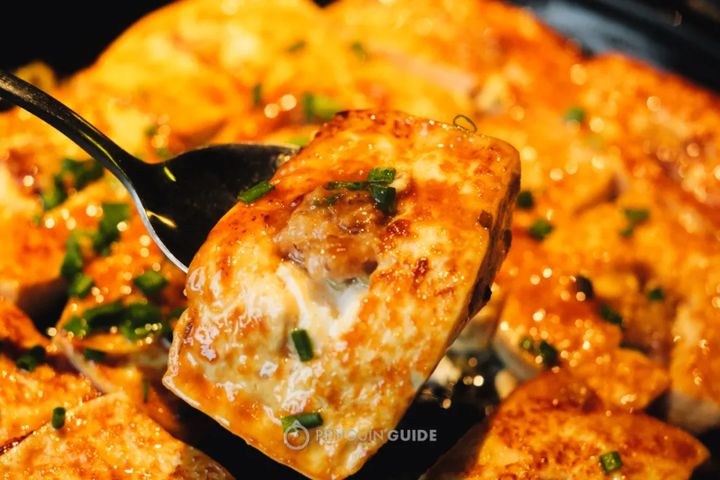
酿豆腐
赣南很多地方把酿豆腐作为筵席风味菜，和“立夏”节联系在一起。这道菜源于北方饺子，因南方少麦，客家人便用酿豆腐寄托对北方饺子、中原文化的感情。每逢时节，或者闲忙之余，它是农村客家人的最爱。
-
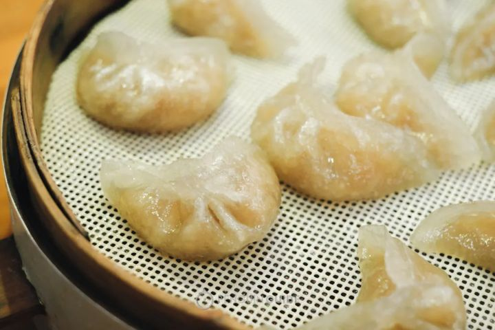
萝卜饺
蒸熟了的萝卜饺，皮柔滑，半透明，内馅隐约可见，吃起来薯粉饺皮的柔韧、鱼肉片的鲜美、萝卜的甜津和佐料的清香融为一体。信丰萝卜饺风味独特，是信丰人最为熟悉也是最为想念的味道。
-
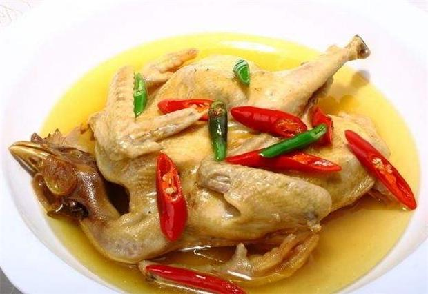
梅城肥鸡
“梅城肥鸡”以制做精细，外形完整，香气扑鼻，肉质烂嫩，整只上桌而驰名中外。此菜色泽微黄，香气扑鼻，味道浓厚，外表完整，质地软嫩，美观大方，是有名的佐酒佳肴。
-
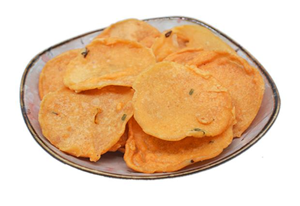
月亮巴
月亮巴，是赣南民间土特产，全称月亮花生巴，月亮豆巴子，也是客家美食之一，以其形如“满月”而得名。酥、松、脆，香气郁雅风味独特，具有香脆可口、松 酥宜人的特点是老少皆宜的传统休闲食品。
-
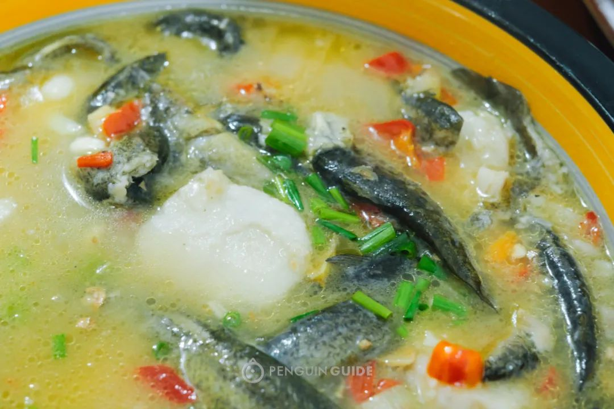
芋仔烧泥鳅
翻开菜谱，“芋仔烧泥鳅”赫然入目，需先刨好一窝芋子，煮得及松又软，淀粉很多，泥鳅是活蹦乱跳地下到锅里，又鲜又滑，再加上一些辣椒，放点盐，即使不施油。那味道也不同一般，有一种天然的鲜甜味。
特产推荐
赣州有江西省南大门的美誉，拥有独特的气候地理位置，属于中亚热带南缘，有丘陵、山地、盆地，还是江西省最大的行政区，是宋代文物保存最多的一座城市，因此有“江南宋城”美誉，用于深厚的历史文化背景，因此无论是自然旅游资源，还是人文旅游景观，都非常值得游客为之打卡，更何况这里还有众多的特产，尤其是美食类，更是让喜欢吃水果的游客收获颇丰：
1、南安板鸭：南安板鸭是这里的特产，最为主要的还是原材料，得益于当地独特的山、水资源环境，当然也少不了独特的制作工艺，“板鸭”一词，应该出自这里，他们可以把鸭子整理的平整干爽，色泽亮丽，味道鲜美，处处显得非常用心，让食客望之就有食欲，因此名声远扬，据说已经有400百多年的历史，曾远销港澳等地，属于肥而不腻，入口即化，老少咸宜。
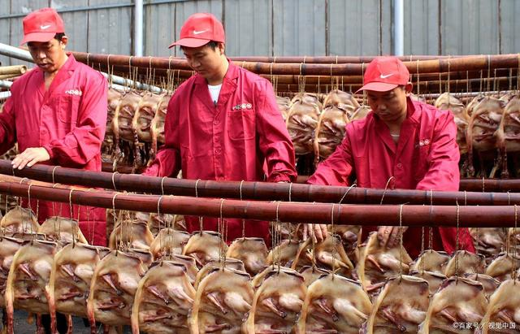2、兴国灰鹅：兴国灰鹅因羽毛呈灰色而得名，是兴国县的地理标志保护产品，东北的铁锅炖大鹅，很多大鹅都是从这里引进，北方地区也曾大量饲养，被当成国产大鹅，它与板鸭一样，是难得的美味，适合品尝。
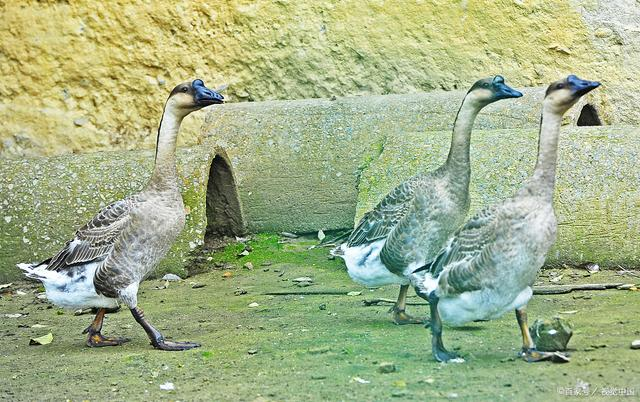3、信丰萝卜：它的特点是依托当地的优质土壤，独特的气候地理条件、温湿度都影响它的长相，同样是地理标志保护产品，生长周期在95至120天，因此成熟后的萝卜味道鲜美，口感好、味道甜，关键是“长得好看”。
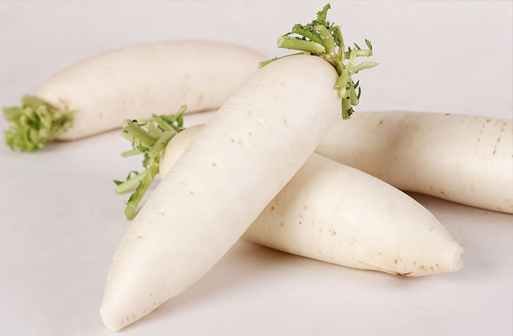4、赣南脐橙：这是一个需要大书特书的特产，而且现在正是最好的季节，赣南脐橙，吃过忘不掉，它让我们知道“晏子使楚”的故事非常真实，“橘生淮南则为橘，橘生淮北则为枳”，赣南脐橙除了品种以外，独特的气候条件、土壤、温湿度缺一不可。
它的特点是：个头大、色泽美、味道香、水分足，吃过很难忘记，再吃其它的脐橙会有味同嚼蜡，难于下咽的感觉，赣南脐橙是果中极品，在多个地方获得过大奖，是地理标志保护产品和证明产品，远销国外的俄罗斯、日本、法国等国家，这里也有“脐橙之乡”的美誉，是中国唯一的“脐橙标准化示范区”。
5、会昌米粉：中国米粉选江西，江西米粉选会昌，这里的米粉好坏可以用数字来说话，全国出口量的60%来自这里，有着“中国米粉之乡”的美誉，同样是得益于当地的大米，离不开气候地理环境和土壤的因素，故此也是地理标志保护产品。
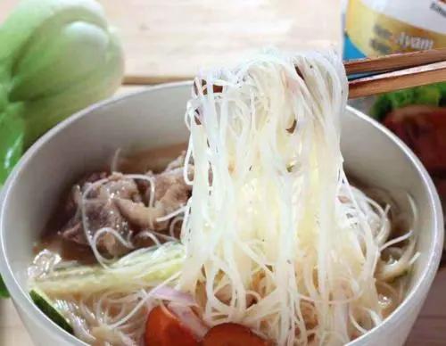6、瑞金咸鸭蛋：有鸭子必有鸭蛋，这是无需争论的，瑞金咸鸭蛋同样是地理标志保护产品，优质原材料是它受欢迎的一个主要原因。
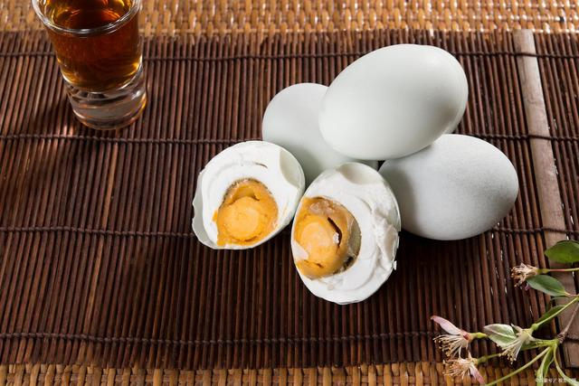7、于都梾木油：过去中国人经常食用动物油，后来改食花生油、大豆油、葵花油等，再后来普遍对管菜籽油、玉米油等，现在越来越注重健康，开发除了非常多的高端食用油料，其中梾木油就是之一，它已经有200多年的历史，也是当地的地理标志保护产品。
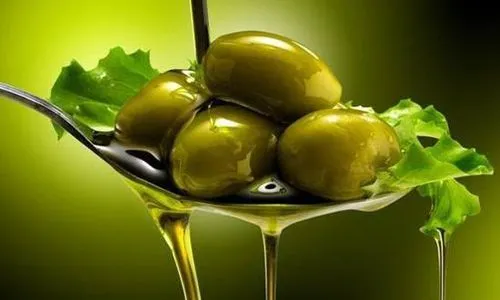8、龙南蜂蜜：蜂蜜的原材料来自于植物的花朵，土壤、气候、温湿度影响植物，不同植物的花朵酿出的蜂蜜自然不相同，因此独特的地理环境，优越的自然环境，蜂蜜自然就是上品，同样是地理标志证明产品。
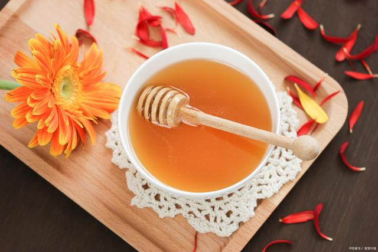9、会昌桔柚：它与赣南脐橙一道，成为当地又一水果之王，同样是地理标志保护产品，让这里盛产水果的名声再次远播，为当地赢得了“中国桔柚之乡”的美誉。
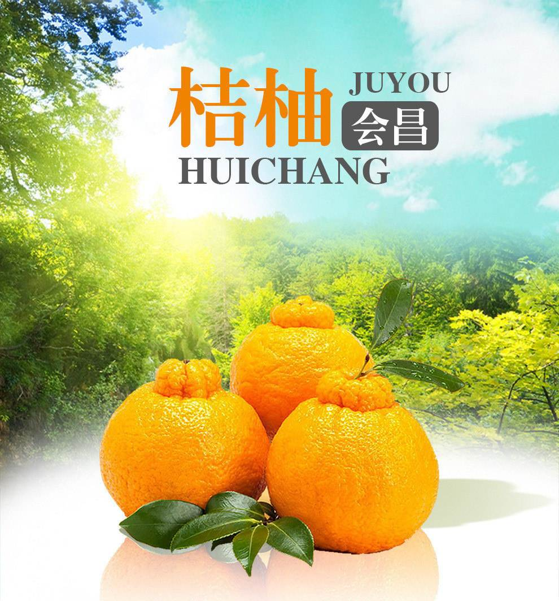10、赣南茶油：前面说到高端食用油，其实食用茶油的好处自不必说，我们知道茶树不能过多施肥和喷洒农药，因此作为木本油料，茶油本身就是上品，而赣南茶树则更是上品中的极品，非常值得拥有，关于它，“平衡点”曾多次购买。
赣南州物产丰富，除了这里还有很多其它的特产，但是这里就不一一列举，小伙伴有机会去旅游，可以现场体验，大多与美食有关，其中水果最受游客青睐； 同时，拥有六大旅游品牌，分别是：红色故都、客家摇篮、江南宋城、生态家园、堪舆圣地、世界橙乡，热门旅游景区非常之多，是江西难得的四季旅游胜地，它也因此成为“国家优秀旅游城市”。